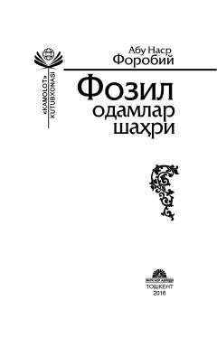

FOAbu Nasr Forobiyning oqilona davlat va adolatli jamiyat qurish g'oyalariga bag'ishlangan falsafiy asari.
Ushbu asarda Sharq Uyg'onish davrining buyuk mutafakkiri Abu Nasr Forobiyning oqilona davlat tuzimi, insoniyat jamiyati va adolatli tuzum haqidagi nodir hamda dono fikrlari jamlangan. Kitobda muallifning «Fozil odamlar shahri», «Arastu falsafasi» va boshqa mashhur risolalaridan namunalar o'rin olgan. Risola faylasuflar, tarixchilar va falsafa sohasi bilan qiziquvchi keng kitobxonlar ommasiga mo'ljallangan.